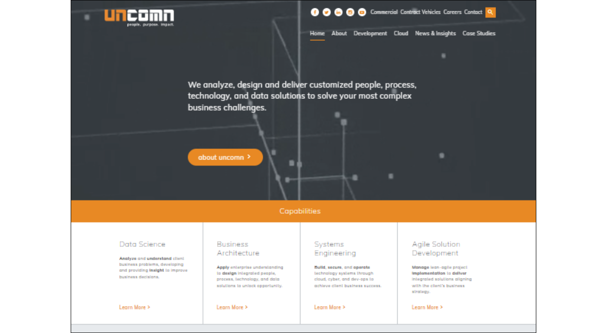
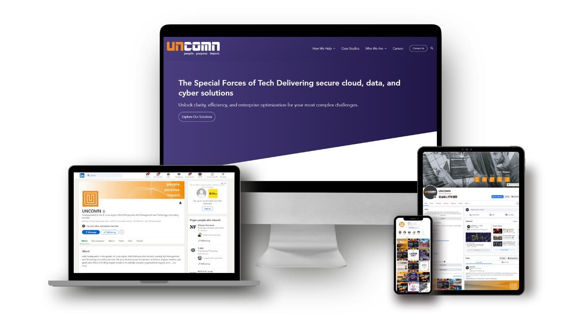
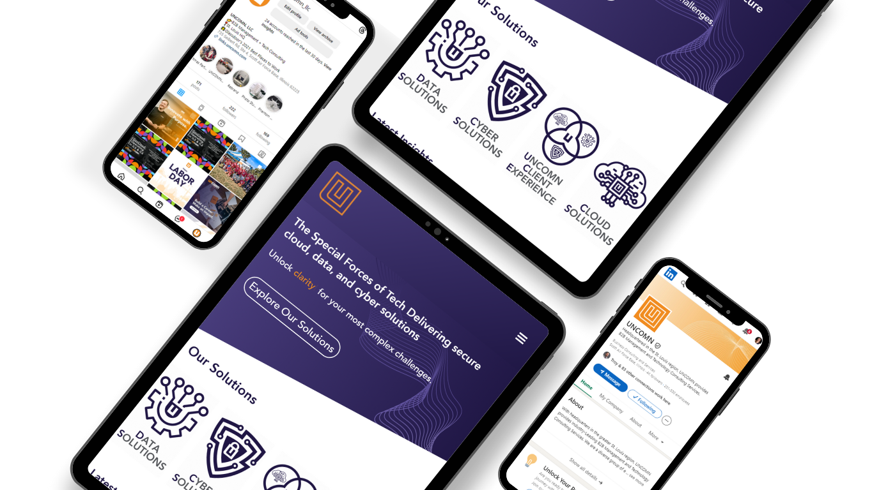
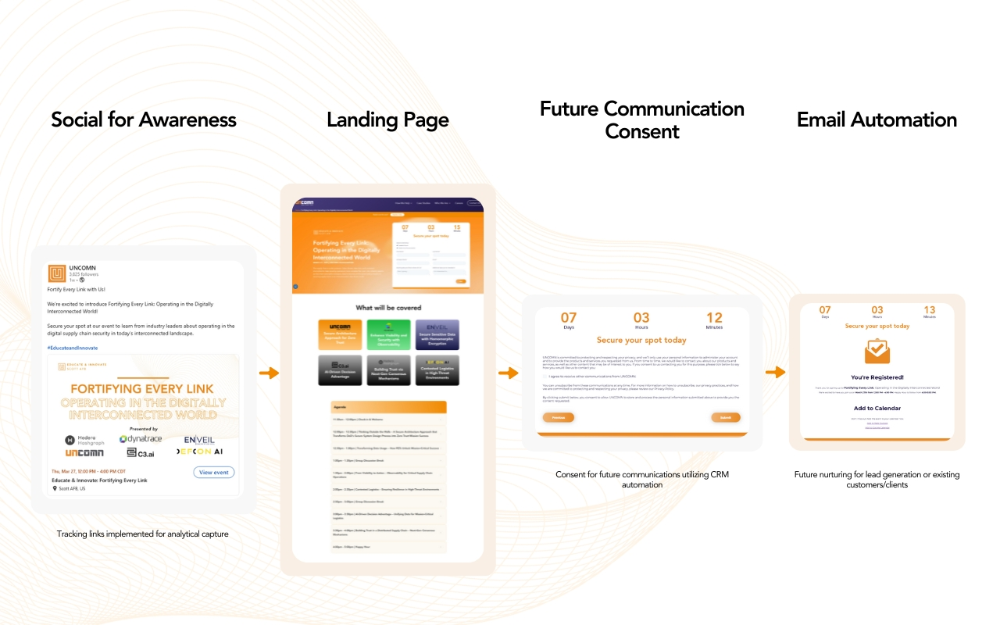

An outdated site that couldn't keep up
UNCOMN's website hadn't been meaningfully updated in years. Navigation was confusing, service pages lacked clear value propositions, and there was zero analytics infrastructure — no GA4, no conversion tracking, no data to make decisions with.
Strategy-first redesign, built on data
I led a complete UX and content overhaul — restructured the sitemap, rewrote every service page for clarity and SEO, optimized forms for lead capture, and built a full analytics stack with GA4, GTM, Consent Mode, and Hotjar.
How I got there
Stakeholder interviews, competitive UX audit, and a full content inventory to identify friction points and conversion leaks.
Wireframes and UI components designed around lead generation, with clear visual hierarchy and strategic CTA placement.
Full site rebuild in Elementor Pro with responsive best practices, optimized page speed, and brand-aligned design system.
GA4 + GTM implementation, A/B testing setup with VWO, Hotjar heatmaps, and cross-browser QA across devices.
The transformation


Design artifacts



The numbers that matter
Increase in organic traffic
Decrease in bounce rate
More form conversions
Internal CTR on bio pages